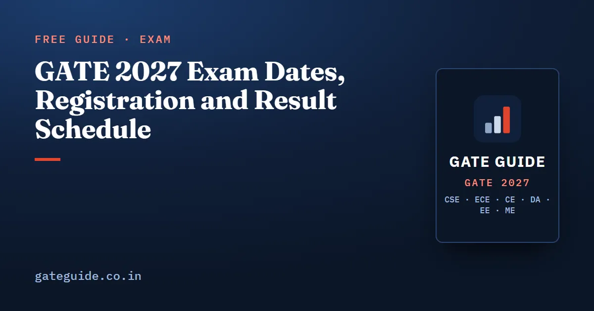

GATE 2027 Exam Dates, Registration and Result Schedule

GATE 2027 is scheduled for 6–7, 13–14 and 20–21 February 2027, and the result is due on 19 March 2027. Registration opened on 2 September 2026. The regular window, originally due to close on 27 September, has been extended to 5 October 2026, and the late-fee window now closes on 12 October 2026. Below are the official dates, what each one means for a CSE aspirant, and how to use the weeks in between.
In this guide
Key takeaways
- The exam runs across three weekends: 6–7, 13–14 and 20–21 February 2027. All six days are Saturdays or Sundays.
- Registration on GOAPS closes on 5 October 2026 at the regular fee (extended from 27 September) and on 12 October 2026 with a late fee.
- Exam city allotment information is due on 4 January 2027.
- The result is scheduled for 19 March 2027.
- IIT Madras is the organizing institute for GATE 2027.
- From mid-September 2026 you have about 20 weeks until the first exam day. Split them into phases instead of treating them as one long block.
GATE 2027 important dates at a glance
| Event | Official date | What you should do |
|---|---|---|
| Registration opens on GOAPS | 2 September 2026 | Set up DigiLocker and start the form |
| Regular registration closes (extended) | 5 October 2026 | Submit the form and pay the regular fee |
| Extended closing, with late fee | 12 October 2026 | Last chance to apply; the fee is ₹500 higher |
| Application rectification window | 14–21 October 2026 | Correct permitted fields in your submitted form |
| Exam city allotment information | 4 January 2027 | Check your city and plan travel |
| Examination days | 6–7, 13–14 and 20–21 February 2027 | Sit your paper on the day in the official schedule |
| Result | 19 March 2027 | Check your result on the official website |
These dates come from gate2027.iitm.ac.in and were last checked on 1 October 2026, after the organisers extended the registration deadlines. Official schedules can change, so confirm every date on the official GATE 2027 website before you act on it. GATE Guide is an independent site and is not affiliated with IIT Madras, IISc or GATE.
Registration: 2 September to 12 October 2026
Registration runs on GOAPS, the GATE Online Application Processing System. The regular window was due to close on 27 September 2026, but the official site states that it has been extended to 5 October 2026 without any late fee. After that you can still apply until 12 October 2026, but at a higher fee.
The late fee works out the same in every category: ₹500 more than the regular fee. Female, SC, ST and PwD candidates pay ₹1,000 for one paper in the regular window and ₹1,500 in the extended window. All other candidates, including foreign nationals, pay ₹2,000 and ₹2,500. For two papers the fees are ₹2,000 or ₹2,500 for the first group and ₹4,000 or ₹4,500 for everyone else.
There is no advantage in waiting for the extended date. Two things decide how smoothly the form goes:
- DigiLocker. DigiLocker registration is mandatory for Indian nationals, and your personal details are fetched from DigiLocker. Fix any mismatch in DigiLocker before you open the form.
- Live photo. A live photo is captured during registration, so fill the form on a device with a working camera and decent light.
The full fee table, the eligibility rules and the certificate file names are in our GATE 2027 registration guide.
How to plan the 20 weeks before February
Counting from 17 September 2026, there are 142 days, roughly 20 weeks, until 6 February 2027. The official dates split that time into natural phases.
| Phase | Dates | Approximate length | Main goal |
|---|---|---|---|
| Registration | September to early October 2026 | 1–2 weeks | Submit the form at the regular fee without pausing study |
| Core preparation | October to December 2026 | About 13 weeks | Cover every subject once, with previous-year questions topic by topic |
| Mock phase | January 2027 | About 4 weeks | Full-length timed mocks, an error log and targeted revision |
| Final revision | Last 7–10 days before your paper | 1–1.5 weeks | Formulas, traps, sleep and an exam-day routine |
A few rules make this calendar work:
- Do not let registration eat a study week. Get DigiLocker ready, fill the form in one sitting and go back to your books.
- Give every section its due. General Aptitude carries 15 marks and Engineering Mathematics about 13. Neither is optional, and both reward steady weekly practice more than a last-minute push.
- Start full-length mocks by January at the latest. A 3-hour paper needs stamina that only full sittings build. Take each mock in one sitting, score it with the official marking scheme and log every mistake by subtopic.
- Keep the last week for revision, not new topics. The final days are for consolidating what you already know and fixing the errors your mocks exposed.
For a week-by-week version of this calendar, see the GATE CSE 2027 preparation strategy. This article gives you the dates; each branch's GATE 2027 book adds a study plan, an analysis of its own paper's past questions to decide what goes into each phase, and 10 full mock tests for the January phase.
Exam city information: 4 January 2027
The official schedule lists 4 January 2027 for exam city allotment information. That is 33 days before the first exam day, so you will have about five weeks to arrange travel.
If your city is far from home, book travel and a place to stay early. Also remember a rule from the registration stage: the same ID you verified through DigiLocker must be produced at the exam centre. Do not register with one ID and carry another.
Exam days and result: February and March 2027
All six exam days fall on weekends: 6–7, 13–14 and 20–21 February 2027. GATE 2027 has 30 test papers, including Robotics and Automation (RA), which is new this year, so the papers are spread across these six days.
The day of the CS paper comes from the official paper-wise schedule. Take it from the official site, not from forwarded screenshots or forecasts. If you add a second paper, check its day as well. A CS candidate may take one second paper from DA, EC, GE, MA, ME, PH, RA or ST.
Whatever the date, the CS paper follows a fixed format: a 3-hour computer-based test with 65 questions for 100 marks, a mix of MCQ, MSQ and NAT questions, and negative marking for MCQs only. The GATE CSE 2027 exam pattern and marking scheme explains each part in detail.
The result is scheduled for 19 March 2027, 26 days after the last exam day.
Who conducts GATE 2027
GATE 2027 is organized by IIT Madras. The organizing role rotates between IISc Bengaluru and seven IITs: Bombay, Delhi, Guwahati, Kanpur, Kharagpur, Madras and Roorkee. IIT Madras organized GATE in 2003, 2011 and 2019, so 2027 continues an eight-year cycle.
The organizing institute publishes the syllabus and the pattern for its year. The 2027 CS syllabus revision was issued under IIT Madras, which matters more for your preparation than any pattern from its older papers. What those three earlier papers looked like, and how much weight to give them, is covered in GATE 2027 by IIT Madras.
How to keep track of date changes
Dates can move, and unofficial posts are not always updated when they do. A simple routine avoids surprises:
- Check the source at each milestone. Open gate2027.iitm.ac.in before 5 October, before 12 October, on 4 January and in the week before your paper.
- Use the official helpdesk for real problems. The GATE 2027 helpdesk is reachable at helpdesk@gate.iitm.ac.in and 044-22578200.
- Keep your registration details consistent. Your DigiLocker details feed the form, and the verified ID has to match what you carry to the centre.
- Write the key dates where you will see them. 5 October, 4 January and your paper day are the three that change what you do.
Once the form is submitted, the calendar stops being the hard part. What you do with the next 20 weeks decides the score, and the plan above is a sound place to start.
Frequently asked questions
When is the GATE 2027 exam?
GATE 2027 is scheduled for 6–7, 13–14 and 20–21 February 2027, which are three consecutive Saturday and Sunday pairs. The day of each paper, including CS, is given in the official paper-wise schedule, so check gate2027.iitm.ac.in before planning travel or your final revision week.
When will the GATE 2027 result be declared?
The official result date for GATE 2027 is 19 March 2027, which is 26 days after the last exam day on 21 February. Dates published by the organizing institute can change, so confirm the result date on gate2027.iitm.ac.in closer to March.
What is the last date to apply for GATE 2027?
IIT Madras has extended the regular registration window on GOAPS to 5 October 2026, without a late fee. After that you can still apply until 12 October 2026 with a late fee, which adds ₹500 to the fee in every category. Registration opened on 2 September 2026. Confirm both dates on gate2027.iitm.ac.in, because they have already moved once.
When will the GATE 2027 exam city be announced?
The official schedule lists 4 January 2027 for exam city allotment information. That leaves about five weeks before the first exam day on 6 February 2027, which is enough time to arrange travel and a place to stay if your centre is far from home.
Which IIT is conducting GATE 2027?
IIT Madras is the organizing institute for GATE 2027. It previously organized GATE in 2003, 2011 and 2019. The organizing role rotates between IISc Bengaluru and seven IITs, and the official portal for this cycle is gate2027.iitm.ac.in.
Sources
- GATE 2027 official website (IIT Madras)
- GATE 2027 important dates (official)
- GATE 2027 question paper pattern (official)
- Year-wise GATE organizing institutes (PW)
- Year-wise GATE organizing institutes (Testbook)
Dates, fees and the syllabus are set by the GATE 2027 organising institute and can change. Always confirm at gate2027.iitm.ac.in.